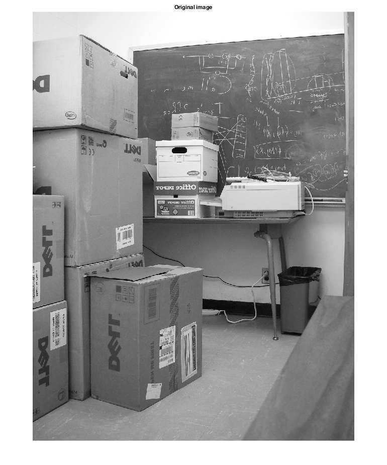
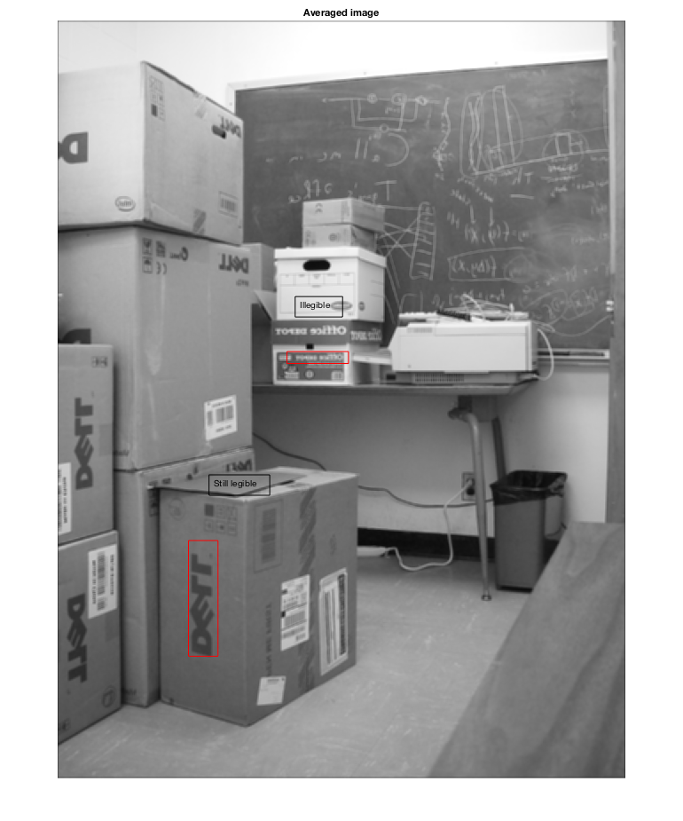

%========================== % Name: hw1_4.m % % Author: Kairi Kozuma % %========================== % Average filter n = 5; aFilt = ones(n)/(n^2); % Filter the image campus3filt = uint8(imfilter(double(campus3), aFilt)); % Show image before and after filtering figure(1); imshow(campus3); title('Original image'); figure(2); imshow(campus3filt); title('Averaged image'); dim = [.4201, .55729, .090056, .014478]; annotation('rectangle',dim,'Color','red') dim = [.4321, .62429, .090056, .014478]; str = 'Illegible'; annotation('textbox',dim,'String',str,'FitBoxToText','on'); dim = [.276, .20061, .043167, .14105]; annotation('rectangle',dim,'Color','red') dim = [.306, .28061, .043167, .14105]; str = 'Still legible'; annotation('textbox',dim,'String',str,'FitBoxToText','on'); % a) The small office depot label on the box becomes unreadable. The large % DELL sign on the box closest to the camera is still visible. The area % passed through OK because the letters were large enough so that smoothing % the edges did not render the letters illegible. A greater neighborhood % size would make all letters unreadable. % b) A sharpening filter is another type of convolution kernel. The % sharpening filter uses the matrix: % [0 -1 0] % [-1 5 -1] % [0 -1 0] % This has the effect of emphasizing disparity between adjacent pixel % values, so that small differences in the image become more apparent.
Warning: Image is too big to fit on screen; displaying at 67% Warning: Image is too big to fit on screen; displaying at 67% 